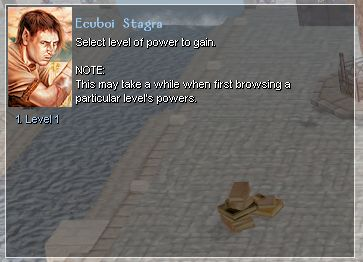
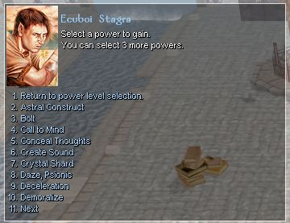
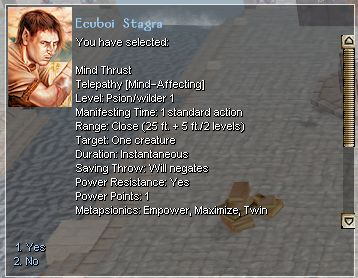

Now that you are familiar with the basic terms of psionics, we can walk through using a psionic character. The first step is to select powers when gaining a level.
Selecting powers is done via a conversation after the normal leveling procedure is complete. If you are using a character created with the Java CC, the conversation will happen when you first take that character into a module.
Initially, you will be presented with a list of the different levels of powers you can learn.

Once you select a level, you will be given a list of all the powers you can take within that level.

When you select a power, you will be given a description of that power. This includes duration, effects, saving throws, power resistance, as well as metamagic and augmentation options. You may need to use the scrollbar to see the entire description.

At the end of the desciption, you can choose whether to accept that power or go back and select another one. Untill you accept a power, you can change between different powers and power levels to look at them freely.
How many powers and which powers you have avaliable varies depending on which manifester class you are. Note that unlike bards and sorcerers, you are not limited to selecting powers of separate levels. You can choose to fill your avaliable powers from any level you have avaliable. While higher level powers may appear to be more effective, remember that lower level powers can be augmented and/or have metapsionics applied to them.
Previous Page Next Page